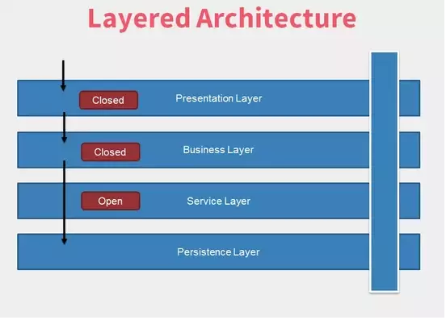
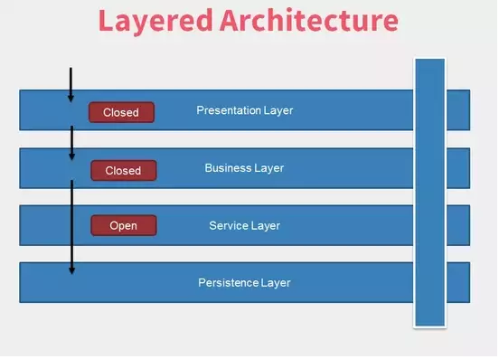

个人理解
略
原文
1 分层架构
分层架构是最常见的架构，也被称为n层架构。多年以来，许多企业和公司都在他们的项目中使用这种架构，它已经几乎成为事实标准，因此被大多数架构师、开发者和软件设计者所熟知。
分层架构中的层次和组件是水平方向的分层，每层扮演应用程序中特定的角色。根据需求和软件复杂度，我们可以设计N层，但大多数应用程序使用3-4层。有太多层的设计会很糟糕，将导致复杂度的上升，因为我们必须维护每一层。在传统的分层架构中，分层包括 表现层、业务或者服务层，以及数据访问层 。 表现层负责应用程序的用户交互和用户体验（外观和视觉）。通常我们会使用 数据传输对象（Data Transfer Object） 将数据带到这一层，然后使用 视图模型（View Model） 渲染到客户端。业务层接收请求并执行业务规则。数据访问层负责操作各种类型的数据库，每个访问数据库的请求都要经过这一层。
分层无需知道其他层如何去做，比如业务层无需知道数据访问层是如何查询数据库的，相反，业务层在调用数据层的特定方法时，只需关注需要部分数据还是全部数据。这就是我们所说的 关注点分离 。这是非常强大的功能，每层负责其所负的责任。
分层架构中的核心概念是管理依赖。如果我们使用依赖倒置原则和测试驱动开发(Test Driven Development)，我们的架构会有更好的健壮性。因为，我们要保证所有可能的用例都有测试用例。
我们需要这样的冗余，即使业务层没有处理业务规则，也要通过业务层来调用数据层，这叫 分层隔离 。对于某些功能，如果我们从表现层直接访问数据层，那么数据层后续的任何变动都将影响到业务层和表现层。
 
分层架构中的一个重要的概念就是分层的开闭原则。如果某层是关闭的，那么每个请求都要经过着一层。相反，如果该层是开放的，那么请求可以绕过这一层，直接到下一层。
分层隔离有利于降低整个应用程序的复杂度。某些功能并不需要经过每一层，这时我们需要根据开闭原则来简化实现。
分层架构是SOLID原则的通用架构，当我们不确定哪种架构更合适的时候，分层架构将是一个很好的起点。我们需要注意防止架构陷入 污水池反模式 。这种反模式描述了请求经过分层，但没做任何事或者只处理了很少的事。如果我们的请求经过所有分层而没有做任何事，这就是 污水池反模式 的征兆。如果20%的请求只是经过各层，而80%的请求实际做事，这还好，如果这个比率不是这样的，那么我们已经患上 反模式综合征 。

此外，分层架构可以演变为 巨石应用（Monolith） ，导致代码库难以维护。
分层架构分析：
- 敏捷性 ：总体敏捷性是指对不断变化的环境作出反应的能力。由于其整体风格（Monolith）的性质，可能会变得难以应对通过所有层的变化，开发者需要注意依赖性和分层分离。
- 易于部署 ：大型应用程序的部署会是个麻烦。一个小要求，可能需要部署整个应用程序。如果能做好持续交付，可能会有所帮助。
- 可测试性 ：使用Mocking和Faking，每一层可以独立测试，因此测试上很容易。
- 性能 ：虽然分层应用程序可能表现良好，但是因为请求需要经过多个分层，可能会存在性能问题。
- 可伸缩性 ：因为耦合太紧以及整体风格（Monolith）的天生特质，很难对分层应用程序进行伸缩。然而，如果分层能够被构建为独立的部署，还是可以具备伸缩能力的。但是，这样做的代价可能很昂贵。
- 易于开发 ：这种模式特别易于开发。许多企业采用这种模式。大多数开发者也都知道、了解，并且可以轻松学习如何使用它。
2 事件驱动架构
事件驱动架构（Event Driven Architecture）是一种流行的 分布式异步架构 模式，用于创建 可伸缩的应用程序 。这种模式是自适应的，可用于小规模或者大规模的应用程序。事件驱动架构可以与 调停者拓扑（Mediator Topology） 或者 代理者拓扑（Broker Topology） 一起使用。理解拓扑的差异，为应用程序选择正确的拓扑是必不可少的。
调停者拓扑
调停者拓扑需要编排多种事件。比如在交易系统中，每个请求流程必须经过特定的步骤，如验证、订单、配送，以及通知买家等。在这些步骤中，有些可以手动完成，有些可以并行完成。
通常，架构主要包含4种组件，事件队列（Event Queue）、调停者（Mediator）、事件通道（Event Channel）和事件处理器（Event Processor）。客户端创建事件，并将其发送到事件队列，调停者接收事件并将其传递给事件通道。事件通道将事件传递给事件处理器，事件最终由事件处理器处理完成。

事件调停者不会处理也不知道任何业务逻辑，它只编排事件。事件调停者知道每种事件类型的必要步骤。业务逻辑或者处理发生在事件处理器中，事件通道、消息队列或者消息主题用于传递事件给事件处理器。事件处理器是自包含和独立的，解耦于架构。理想情况下，每种事件处理器应只负责处理一种事件类型。
通常，企业服务总线、队列或者集线器可以用作事件调停者。正确选择技术和实现能够降低风险。
代理者拓扑
不像调停者拓扑， 代理者拓扑 不使用任何集中的编排，而是在事件处理器之间使用简单的队列或者集线器，事件处理器知道处理事件的下一个事件处理器。

因其分布式和异步的性质， 事件驱动架构 的实现相对复杂。我们需要面对很多问题，比如网络分区、调停者失败、重新连接逻辑等。由于这是一个分布式且异步的模式，如果你需要事务，那就麻烦了，你得需要一个 事务协调器 。 分布式系统 中的事务非常难以管理，很难找到标准的工作单位模式。
另一个充满挑战的概念是契约。架构师声称服务的契约应该预先定义，而应变是非常昂贵的。
事件驱动架构分析：
- 敏捷性 ：由于事件和事件处理器之间解耦，并且可独立维护，因此这种模式的敏捷性很高。变化可以快速、轻松地完成，而不会影响整个系统。
- 易于部署 ：由于架构是解耦的，因此很容易部署。组件可以独立部署，并且可以在调停者上注册。部署在代理者拓扑上也相当简单。
- 可测试性 ：虽然独立测试组件很容易，但测试整个应用程序很有挑战。因此端到端的测试是很难的。
- 性能 ：事件驱动架构性能非常好，因为它是异步的。此外，事件通道和事件处理器可以并行工作，因为它们是解耦的。
- 可伸缩性 ：事件驱动架构的伸缩性非常好，因为组件之间解耦，组件可以独立扩展。
- 易于开发 ：这种架构的开发不是很容易。需要明确定义契约，错误处理和重试机制得处理得当。
3 微内核架构
微内核架构（Microkernel architecture）模式也被称为 插件架构（plugin architecture） 模式。这是产品型应用程序的理想模式，由两部分组成： 核心系统 和插件模块 。核心系统通常包含最小的业务逻辑，并确保能够加载、卸载和运行应用所需的插件。许多操作系统使用这种模式，因此得名微内核。
插件彼此独立，因此解偶。核心系统持有注册器，插件将自己注册其上，因此核心系统知道哪里可以找到它们以及如何运行它们。

这种模式非常适合桌面应用程序，但是也可以在Web应用程序中使用。事实上，许多不同的架构模式可以作为整个系统的一个插件。对于产品型应用程序来说，如果我们想将新特性和功能及时加入系统，微内核架构是一种不错的选择。
微内核架构分析：
- 敏捷性 ：由于插件可以独立开发并注册到核心系统，微内核架构具有很高的敏捷性。
- 易于部署 ：依赖于核心系统的实现，能做到不需要重新启动整个系统来完成部署。
- 可测试性 ：如果插件开发是独立的，测试就可以独立且隔离地进行。还可以Mock核心系统来测试插件。
- 性能 ：这取决于我们有多少插件在运行，但性能可以调优。
- 可伸缩性 ：如果整个系统被部署为单个单元，这个系统将难以扩展。
- 易于开发 ：这种架构不容易开发。实现核心系统和注册会很困难，而且插件契约和数据交换模型增加了难度。
4 微服务架构
尽管微服务的概念还相当新，但它确实已经快速地吸引了大量的眼球，以替代整体应用和面向服务架构（SOA）。其中的一个核心概念是具备高可伸缩性、易于部署和交付的独立部署单元（Separately Deployable Units）。最重要的概念是包含业务逻辑和处理流程的服务组件（Service Component）。拿捏粒度设计服务组件是必要而具有挑战性的工作。服务组件是解耦的、分布式的、彼此独立的，并且可以使用已知协议来访问。
微服务的发展是因为整体应用和面向服务应用程序的缺陷。整体应用程序通常包含紧耦合的层，难以部署和交付。比如，如果应用程序总在每次应对变化时垮掉，这是一个因耦合而产生的大问题。微服务将应用程序分解为多个部署单元，因此很容易提升开发和部署能力，以及可测性。虽然面向服务架构非常强大，具有异构连接和松耦合的特性，但是性价比不高。它很复杂、昂贵，难于理解和实现，通常对于大多数应用程序来说矫枉过正。微服务简化了这种复杂性。

跨服务组件的代码冗余是完全正常的。开发微服务时，为了受益于独立的部署单元，以及更加容易的部署，我们可以违反DRY原则。其中的挑战来自服务组件之间的契约，以及服务组件的可用性。
微服务架构分析：
- 敏捷性 ：由于服务组件可以各自独立开发，彼此没有耦合，因此微服务架构具有很高的敏捷性。独立部署单元能够对变化作出迅速的反应。
- 易于部署 ：相比其他的架构模式，微服务的优势是服务组件即是单独部署单元。
- 可测试性 ：服务组件的测试可以独自完成。微服务的可测试性很高。
- 性能 ：依赖于服务组件和这种特定模式的分布式性质。
- 可伸缩性 ：独立部署单元天然具备很好的伸缩性。
- 易于开发 ：每个服务组件可以各自独立实现。